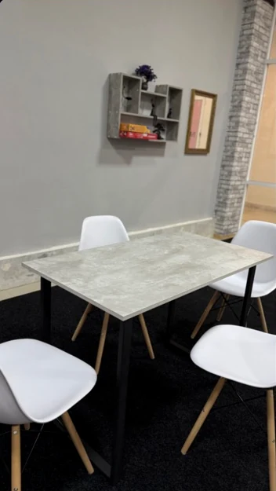
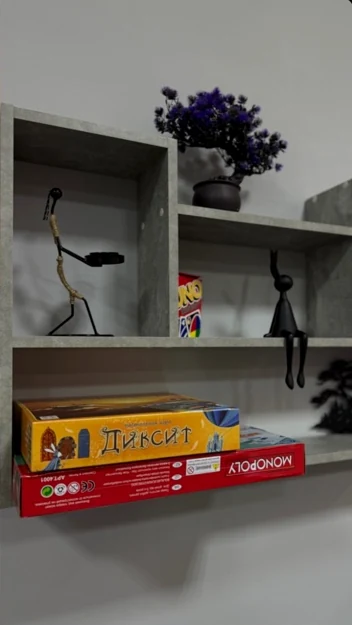
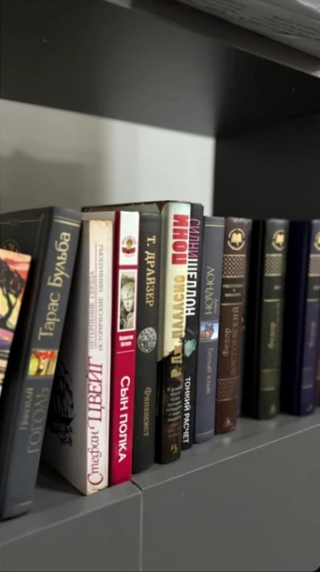

✦
Подготовка к ЕГЭ и ОГЭ
Системная подготовка к экзаменам и регулярная проверка знаний.
Подробнее ↗Помогаем школьникам уверенно двигаться к своим целям: готовиться к ЕГЭ и ОГЭ, разбираться в предметах и открывать новое. Очно в Грозном и онлайн.
● Очно в Грозном ● Онлайн ● Индивидуально и в группах
Подберём направление с учётом возраста, задач и удобного формата обучения.
Системная подготовка к экзаменам и регулярная проверка знаний.
Подробнее ↗Поддержка по школьным предметам, помощь с заданиями и закрепление тем.
Подробнее ↗Знакомство с учёбой и развитие уверенности в знаниях.
Подробнее ↗Практический курс HTML и CSS для знакомства с созданием сайтов.
Подробнее ↗Индивидуальный подход и занятия в небольших группах.
Регулярная проверка знаний и обратная связь для родителей.
Отдельная зона отдыха, настольные игры и пространство для общения.
Поможем подобрать удобное время занятий.
Материалы и задания для последовательной работы над темами.
Первое занятие бесплатно — можно познакомиться с форматом.
Русский язык
Русский язык
Русский язык
Русский язык
Показаны четыре предоставленных результата ЕГЭ по русскому языку за 2026 год; это не средний результат всех учеников центра.
Между занятиями ученики могут провести время в отдельной зоне отдыха: поиграть в настольные игры, полистать книги или пообщаться друг с другом.



Да, первое пробное занятие бесплатное. Уточните удобное время у администратора.
Да, центр предлагает очные и онлайн-занятия. Формат конкретной программы уточняйте при записи.
Выберите желаемую дату и время в календаре. Администратор подтвердит возможность записи в WhatsApp.
Да, доступны индивидуальные, групповые и мини-групповые форматы. Наличие мест уточняется.
В центре действует предложение со скидкой 50%. Точные условия и применимость к абонементам необходимо уточнить у администратора.
Расскажите, какой предмет или направление вас интересует. Поможем обсудить подходящий формат.